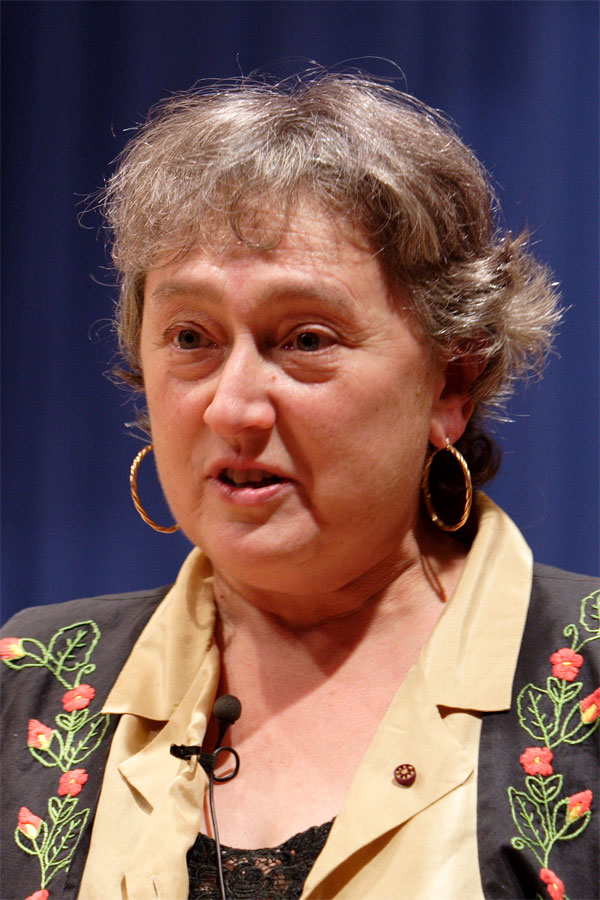
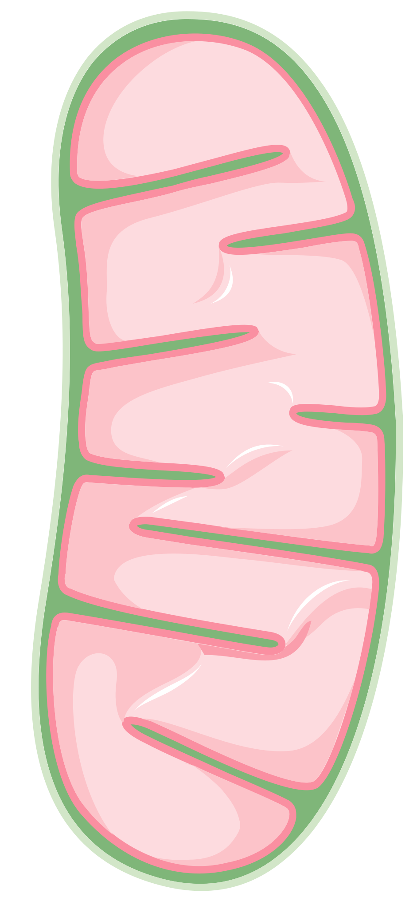
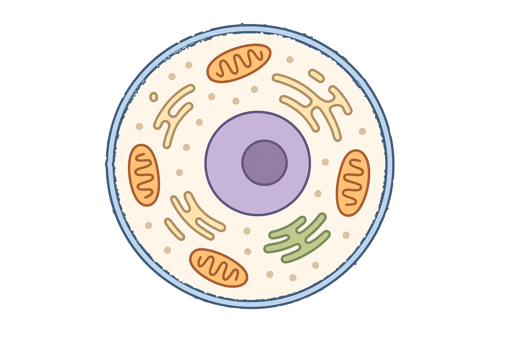

✎ Clica per editar · Ctrl+B negreta · × rosa elimina · Ctrl+Z desfés
✕
🍎
SA1 · La cèl·lula viva · Sessió 1 de 4
Per què ens morim si no mengem ni respirem?
La cèl·lula: la cosa viva més petita, i necessita menjar i aire
Biologia i Geologia · 3r ESO IE Temple
✕
Autònom
✕
⏱️ 2h total (10+30+30+25 · tiquet 12 · metacognició 5)
✕
✕
Nom:
Data:
A
✕
🎯 Objectius d'aprenentatge d'avui
Justifico per què la cèl·lula és la primera estructura considerada "viva", i no l'orgànul ni la molècula.
Explico, en termes de flux d'energia, per què un heteròtrof ha de menjar i un autòtrof no (fotosíntesi vs. respiració).
Raono com un defecte al mitocondri afectaria tota la cèl·lula i quins teixits ho notarien més.
Valoro què implica que el mitocondri fos un bacteri lliure (Margulis): el model de cèl·lula és revisable.
✕
0
Idees prèvies ⏱️ 10 min
✕
Activa el que ja saps — no hi ha respostes dolentes
✏️ 1. Dibuixa una cosa viva molt petita del teu cos (per exemple, una cèl·lula). Com creus que és?
✕
✏️ dibuixa aquí
✏️ 2. Què necessita aquesta cosa viva per seguir viva? Formula una hipòtesi (una explicació que et sembla probable i que després es pot comprovar) i justifica-la.
✏️ 3. Pots aguantar setmanes sense menjar, però només uns minuts sense respirar. Per què? Relaciona-ho amb el que necessita una cèl·lula en cada moment.
✕
🔗
Punt de partida de la SA: Avui no estudiem "totes les parts" de la cèl·lula. Estudiem una pregunta: per què el teu cos necessita menjar i aire. La resposta està dins de cada cèl·lula. Anota sense por: les idees prèvies incorrectes no resten puntuació.
✕
1
Explore: mira dins la cèl·lula ⏱️ 30 min
✕
Obre l'aplicació «La cèl·lula per dins» (app_celula.html, a la pàgina de la sessió al Classroom) i clica cada part per veure què hi passa
✕
🤔 Abans de mirar, fes una predicció raonada: on es "crema" el menjar i l'aire per fer energia? I per on entren i surten les substàncies? Per què ho creus?
Explora la cèl·lula a la web. Per a cada part, no només diguis què fa, sinó per què és imprescindible per estar viu:
✕
1
Busca el mitocondri. Explica què hi entra, què en surt i per què la cèl·lula no podria viure sense ell.
✕
2
Busca la membrana. Què passaria si deixés entrar i sortir qualsevol substància sense control? Justifica-ho.
✕
3
Busca el nucli: hi ha guardat l'ADN, el manual d'instruccions de la cèl·lula. Totes les cèl·lules del teu cos en guarden una còpia idèntica... i tot i així una cèl·lula de la pell i una del múscul són molt diferents. Formula una hipòtesi: si el manual és el mateix, què deu ser diferent entre les dues? (Pista: pensa què fa una cuina si té el mateix llibre de receptes però només cuina algunes pàgines.)
✕

Lynn Margulis Wikimedia Commons
Moment epistèmic — el model de cèl·lula ha canviat
La científica Lynn Margulis va proposar que, fa molts milions d'anys, el mitocondri era un bacteri lliure (un ésser viu format per una sola cèl·lula, molt més petita que les nostres) que va passar a viure dins d'una altra cèl·lula. Durant anys ningú la va creure. Avui se sap que tenia raó, i la prova és forta: el mitocondri té ADN propi, diferent del del nucli, i es divideix ell sol, com fan els bacteris.
💡 Pensa-hi: Margulis va trigar més de 15 anys a convèncer la comunitat científica. Quina mena de proves creus que va haver de portar? Per què no n'hi havia prou amb tenir la idea?
✕
2
La cèl·lula necessita menjar i respirar ⏱️ 30 min
✕
La cosa viva més petita: per estar viva ha d'aconseguir matèria i energia
La cèl·lula és la cosa viva més petita. Tot el teu cos n'està fet. Per seguir viva, cada cèl·lula necessita matèria (per construir-se i reparar-se) i energia (per funcionar). D'aquí ve la resposta a la pregunta del títol:
✕
⚛️Àtom
→
Molècula
→

Orgànul
→ ⭐
⭐ Cèl·lula = 1r nivell viu
→
Teixit
→
Òrgan
→
🫁Aparell / sistema
→
Organisme
→
🏞️Ecosistema
→
🌍Biosfera
Esquemes propis i Servier Medical Art (CC BY 4.0) — es veuen sempre, també sense internet i impresos.
✕
Vocabulari: un orgànul és cadascuna de les peces de dins la cèl·lula (el nucli, el mitocondri...). Un teixit és un grup de cèl·lules iguals que fan la mateixa feina (múscul, pell...).
✏️ Pensa-hi: per quina raó diem que un mitocondri tot sol no està viu, però una cèl·lula sí? Què pot fer la cèl·lula que l'orgànul no pot fer sol?
✕
⚡
La respiració cel·lular: dins el mitocondri, el menjar (glucosa) es combina amb l'oxigen de l'aire i s'allibera energia. Per això mengem (per la glucosa) i respirem (per l'oxigen). Sense una de les dues coses, la cèl·lula es queda sense energia i mor.
✕
🌿
I les plantes? Les plantes no mengen: fabriquen el seu propi aliment amb la llum del sol. Aquest procés es diu fotosíntesi. Per això les plantes són autòtrofes ("es fan el menjar elles mateixes") i els animals som heteròtrofs ("hem de menjar altres éssers vius").
Compte amb un error molt habitual: fabricar-se el menjar no vol dir no necessitar-ne l'energia. Les plantes també tenen mitocondris i també respiren, de dia i de nit: la fotosíntesi els fa el menjar, i la respiració cel·lular n'extreu l'energia. Són dos processos diferents, no un que substitueix l'altre.
✏️ Flux d’energia — dues preguntes.(a) D’on treu l’energia una planta, i d’on la treus tu? Per això un és autòtrof i l’altre heteròtrof. (b) Tots dos tenen mitocondris. Per quina raó la planta també els necessita, si ella mateixa es fabrica el menjar?
✕
3
Les 3 parts clau de la cèl·lula ⏱️ 25 min
✕
Només tres, però cada una és essencial per estar viva
✕

Una cèl·lula per dins. Busca-hi les 3 parts que treballem avui i escriu-ne el nom a la llegenda de sota, guiant-te pel color. Els altres requadres del dibuix deixa’ls en blanc.
✕
Llegenda del dibuix — escriu el nom de cada part
Identifica-les pel color al dibuix de sobre.
la línia blava de fora
la bola gran lila del mig
les peçes taronges petites
✏️ Omple les dues columnes: primer la funció de cada part, i després què deixaria de funcionar a la cèl·lula si aquella part li faltés.
Part
Què fa? (amb les teves paraules)
Què deixaria de funcionar si li faltés?
✕
🛡️
Membrana
✕
🔵
Nucli
✕
⚡
Mitocondri
✕
🧠 Pregunta per pensar: imagina una persona amb un defecte als mitocondris. Quins teixits (grups de cèl·lules que fan la mateixa feina: múscul, cervell, pell...) ho notarien primer i més fort? Per què? Pista — pensa quins teixits del teu cos no paren mai de treballar, ni quan dorms.
✕
🧠 Metacognició — 5 min
✕
🎯 Torna als objectius del principi — Marca el que has après avui:
✕
Justifico per què la cèl·lula és la primera estructura considerada "viva", i no l'orgànul ni la molècula.
✕
Explico, en termes de flux d'energia, per què un heteròtrof ha de menjar i un autòtrof no.
✕
Raono com un defecte al mitocondri afectaria tota la cèl·lula i quins teixits ho notarien més.
✕
Valoro què implica que el mitocondri fos un bacteri lliure (Margulis): el model de cèl·lula és revisable.
✕
❓
Encara em pregunto...
✕
⭐
Puntuació de la sessió
★★★★★
Encercla les estrelles que consideres
✕
📚 Tasca per a casa — per a la Sessió 2
✕
1
🎨 Dibuix de memòria: Sense mirar cap apunt, dibuixa una cèl·lula amb les 3 parts (membrana, nucli, mitocondri) i escriu què fa cada una. A S2 ho compararàs amb el dibuix d'avui.
✕
2
🥚 Experiment de l'ou (preparació S2): Posa un ou sencer amb closca dins un got alt amb vinagre blanc. Tapa'l i deixa'l 48 hores. Anota els canvis: just en posar-lo, al cap d'1h i al cap de 24h.
✕
3
🏗️ Representa els nivells d'organització (llarg termini — entrega S2): Prepara una manera d'explicar els 10 nivells (àtom → biosfera). Tu tries el format: maqueta, llibreta de cartulines, pòster, còmic... El que vulguis! Tens una fitxa-bastida per planificar-ho.